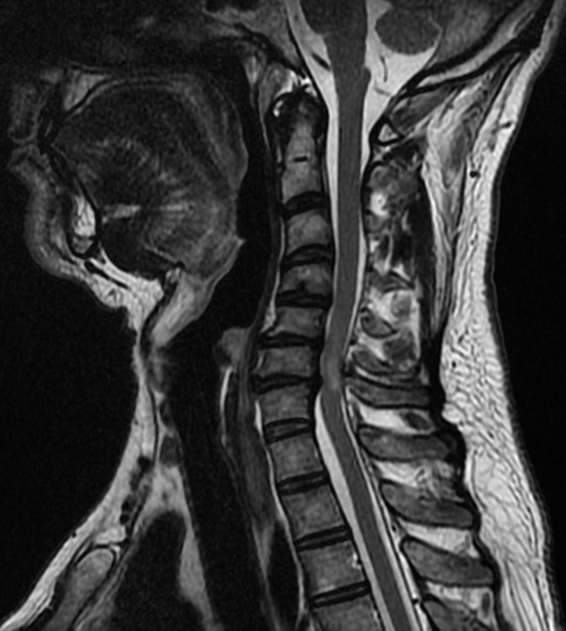

Ficha del catálogo
Mielopatía espondilótica cervical
- Sistema
- Nervioso
- Modalidad
- RM
- Región
- Columna cervical y médula espinal
- Dificultad
- Intermedio
La mielopatía espondilótica cervical es el sufrimiento crónico de la médula por estrechamiento degenerativo del canal, con protrusiones discales, osteofitos posteriores e hipertrofia de los ligamentos. Es la causa más frecuente de disfunción medular en el adulto mayor y produce torpeza de manos, marcha inestable y signos de vía larga.
Técnica
Resonancia magnética cervical con sagitales T1 y T2 y axiales potenciados en T2 en los niveles afectados. Se completa con tomografía cuando se necesita valorar osteofitos, calcificación ligamentosa o planificar la cirugía.
Qué observar
- Reducción del diámetro anteroposterior del canal en el nivel más comprometido
- Complejo discoosteofitario anterior y engrosamiento del ligamento amarillo
- Borramiento del espacio subaracnoideo anterior y posterior
- Deformidad o aplanamiento de la médula en los cortes axiales
- Señal alta intramedular en T2 en el nivel de máxima compresión
- Número de niveles afectados y alineación global del segmento cervical
Hallazgos
El canal aparece estrechado por protrusión discal, osteofitos del muro posterior y engrosamiento del ligamento amarillo, con desaparición del líquido cefalorraquídeo alrededor de la médula. En los cortes axiales la médula se aplana o adopta forma de media luna. La hiperintensidad intramedular en T2 en el nivel de máxima compresión traduce edema o gliosis y es el hallazgo que mejor se correlaciona con la gravedad clínica y con la respuesta a la cirugía.
Perlas
La correlación entre el grado de estenosis y los síntomas es imperfecta, por lo que el informe debe destacar el nivel de máxima compresión, la deformidad medular en el plano axial y la presencia de señal intramedular anómala, que son los datos que más pesan en la decisión quirúrgica. Una señal alta muy extensa y persistente sugiere daño ya establecido con menor reversibilidad.
Diagnóstico diferencial
- Mielitis inflamatoria
- Lesión intramedular extensa con realce y sin compresión mecánica que la explique, de instauración subaguda.
- Tumor intramedular
- Ensancha la médula con realce y quistes asociados, sin relación con el nivel de estenosis.
- Siringomielia
- Cavidad longitudinal con señal de líquido cefalorraquídeo, de bordes nítidos y con frecuencia asociada a anomalía de la charnela.
- Osificación del ligamento longitudinal posterior
- Banda ósea densa detrás de los cuerpos vertebrales que se identifica mejor en tomografía y estrecha el canal de forma continua.
Simuladores
- Artefacto de truncamiento que produce una línea central de señal alta en la médula
- Artefacto de flujo del líquido cefalorraquídeo en secuencias potenciadas en T2
- Volumen parcial en cortes sagitales oblicuos
Por modalidad
- TC
- Detalla el componente óseo, la calcificación ligamentosa y la anatomía para la planificación quirúrgica.
- RM
- Es la técnica de elección porque valora la médula, el grado de compresión y la señal intramedular.
Protocolo
Sagitales T1 y T2 y axiales potenciados en T2 desde la unión craneocervical hasta la charnela cervicodorsal; conviene medir el diámetro del canal y describir el nivel de máxima compresión y la extensión de la señal intramedular.
Clasificación
Errores frecuentes
- Informar solo la estenosis sin describir la deformidad medular en el plano axial
- Confundir un artefacto de truncamiento con señal patológica intramedular
- No precisar el nivel de máxima compresión, dato clave para la cirugía

mielopatía cervical estenosis de canal señal intramedular ligamento amarillo espondilosis resonancia cervical